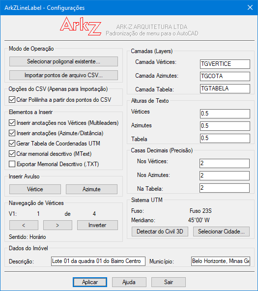
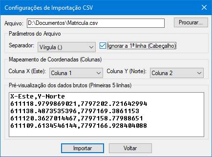
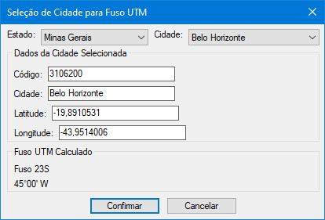
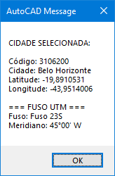

A rotina gerencia dados externos e geométricos de forma inteligente antes de desenhar qualquer linha no AutoCAD, contando com ferramentas completas de automação:
| Recurso | Descrição Técnica | Vantagem no Fluxo de Trabalho |
|---|---|---|
| 🔄 Navegação por Vértices | Seleção da polilinha com ocultação do DCL. Navegação visual pelos vértices usando teclas TAB ou Setas com destaque grdraw em tempo real. | Permite definir com precisão o Vértice Inicial (V1) para iniciar a numeração, sem necessidade de comandos manuais complexos. |
| 🎯 Definição de V1 e Sentido | Controles para definir o vértice inicial (Spinner) e inverter o sentido da polilinha (Horário/Anti-horário) com botão "Inverter". | Flexibilidade total para adequar a numeração e o sentido às normas de cadastro ou preferências do usuário. |
| 🧠 Detecção Civil 3D | Leitura automática da variável CGEOCS para
identificar o Fuso e Meridiano configurados no desenho, sem
intervenção do usuário. |
Integração nativa com projetos Civil 3D, eliminando configurações manuais redundantes. |
| 🌍 Seleção de Cidade (SIRGAS 2000) | Banco de dados interno (ArkZLineLabel.csv) que utiliza a Longitude exata da cidade para calcular o Fuso UTM e o Meridiano Central por fórmula matemática oficial com determinação automática do hemisfério (N/S). | Elimina erros de tabelas manuais e garante o fuso correto para cidades em divisas (Ex: Oiapoque/AP automaticamente no Fuso 22N). |
| 📐 Verificação e Fechamento de Fecho | Análise automática da propriedade Closed da
polilinha. Detecta polilinhas abertas e oferece fechamento
automático com adição do vértice de fechamento, com
confirmação interativa. |
Garante que a polilinha esteja geometricamente fechada para cálculo correto de área e geração do memorial. Comandos ARKZFECHAR e ARKZVERIFICAR para lote. |
| 📤 Exportação CSV | Botão dedicado para exportar a tabela de coordenadas gerada para arquivo CSV estruturado. | Facilita a integração com outros softwares e a entrega de dados em formato universal. |
| 📝 Memorial Descritivo | Geração automática do memorial em MText (dentro do AutoCAD) ou arquivo TXT, incluindo Fuso, Meridiano, área, perímetro e campos para preenchimento de dados do proprietário e responsável técnico. | Documentação completa e padronizada para processos de georreferenciamento e registro de imóveis. |
| 📊 Tabela UTM | Criação de tabela no AutoCAD com colunas: VÉRTICE, NORTE, ESTE, DE, PARA, AZIMUTE/RAIO e DISTÂNCIA. Suporte a curvas (bulges) com exibição de RAIO. | Planilha de coordenadas pronta para impressão e conferência em campo. |
| 🔢 Múltiplos Separadores CSV | Suporte nativo para delimitadores: Vírgula (,), Ponto e Vírgula (;) ou Tabulação (Tab). | Compatível com planilhas geradas no Excel, BrOffice ou blocos de notas brutos. |
| 🔀 Mapeamento Invertido | Menus suspensos que identificam e associam qual coluna do arquivo representa o Eixo X (Este) e o Eixo Y (Norte). | Não importa a ordem das colunas no arquivo, o script faz a leitura correta sem exigir edição prévia. |
| 📋 Filtro de Cabeçalho | Caixa de seleção para ignorar a primeira linha do arquivo de forma opcional. | Evita erros fatais de leitura gerados por títulos textuais de colunas. |
| 👁️ Pré-visualização Interna | Exibição em tempo real das primeiras 5 linhas da planilha dentro de uma caixa de listagem (Listbox) no diálogo de importação. | O operador visualiza a estrutura do arquivo antes de autorizar o processamento dos dados. |
| 🔍 Zoom Automático | Enquadramento espacial automático aplicado imediatamente após a importação e desenho dos pontos. | Elimina a necessidade de localizar manualmente a geometria importada quando esta estiver distante na tela. |
| ✏️ Comandos Avulsos | Botões para inserção de Vértice (ARKZVTX) ou Azimute (ARKZAZI) de forma independente, sem processar toda a polilinha. | Permite anotações pontuais em trabalhos de detalhamento e correção. |
| 📐 Suporte a Curvas (Bulges) | Detecção automática de curvas em polilinhas através da
propriedade Bulge. Cálculo de Raio, Desenvolvimento,
Tangente e Ângulo Central. |
Tabela exibe "R=XX,XXm" para segmentos curvos e o memorial inclui os parâmetros da curva, garantindo precisão topográfica. |
CGEOCS,
sem necessidade de intervenção do usuário. | Comando | Descrição |
|---|---|
ARKZLINELABEL |
Executa o programa principal com navegação de vértices |
ARKZCONFIG |
Configura automaticamente o ambiente (estilos, camadas, etc.) |
ARKZSAVEZONE |
Salva a zona UTM no dicionário do desenho |
SELECTCITY |
Seleciona cidade e calcula o fuso UTM |
ARKZVTX |
Insere um vértice avulso (MLEADER) |
ARKZAZI |
Insere um azimute avulso |
ARKZTESTCSV |
Testa o carregamento da base de cidades |
ARKZFECHAR |
Fecha polilinhas selecionadas em lote |
ARKZVERIFICAR |
Verifica e lista polilinhas abertas no desenho |
ARKZDEBUGBULGE |
Depura bulges da polilinha selecionada (diagnóstico) |
MIT License Copyright (c) 2026 ARK-Z ARQUITETURA LTDA - Ezequiel M. Rezende Permission is hereby granted, free of charge, to any person obtaining a copy of this software and associated documentation files (the "Software"), to deal in the Software without restriction, including without limitation the rights to use, copy, modify, merge, publish, distribute, sublicense, and/or sell copies of the Software, and to permit persons to whom the Software is furnished to do so, subject to the following conditions: The above copyright notice and this permission notice shall be included in all copies or substantial portions of the Software. THE SOFTWARE IS PROVIDED "AS IS", WITHOUT WARRANTY OF ANY KIND, EXPRESS OR IMPLIED, INCLUDING BUT NOT LIMITED TO THE WARRANTIES OF MERCHANTABILITY, FITNESS FOR A PARTICULAR PURPOSE AND NONINFRINGEMENT. IN NO EVENT SHALL THE AUTHORS OR COPYRIGHT HOLDERS BE LIABLE FOR ANY CLAIM, DAMAGES OR OTHER LIABILITY, WHETHER IN AN ACTION OF CONTRACT, TORT OR OTHERWISE, ARISING FROM, OUT OF OR IN CONNECTION WITH THE SOFTWARE OR THE USE OR OTHER DEALINGS IN THE SOFTWARE.